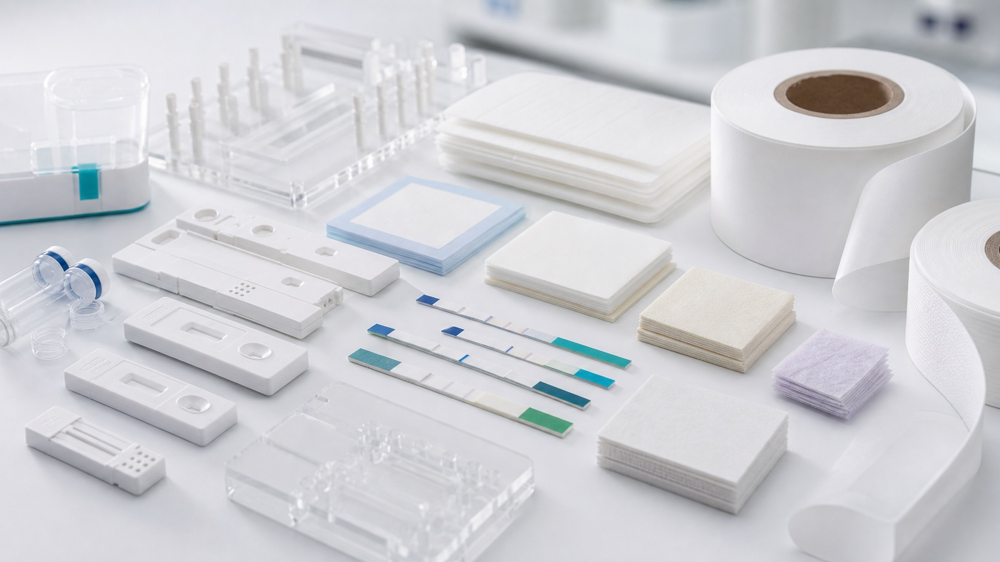

Membrane and flow
Match capillary flow time, protein binding, pore structure, and test-line process to the assay.
LFIA materials
Browse nitrocellulose membranes, sample pads, conjugate pads, absorbent pads, housings, and development support for research lateral flow assays. Enquiry categories only: specification, source, availability and lead time require review.

Selection answer
Select lateral flow assay materials as a system: membrane capillary behavior, sample treatment, conjugate release, absorbent capacity, overlap, housing compression, and assay chemistry all affect performance. Evaluate materials with the intended sample and reagent workflow rather than choosing each pad independently.
General selection guidance · Updated November 6, 2026. These are general selection considerations, not verified specifications for a listed item.
Before requesting a quote
Define requirements first. Source, documentation, pricing, availability and lead time require confirmation in the proposal.
Match capillary flow time, protein binding, pore structure, and test-line process to the assay.
Review sample conditioning, conjugate release, buffer compatibility, capacity, and overlap.
Control strip alignment, compression, read window, sample port, tolerances, and lot traceability.
Research components & custom sourcing
Open an enquiry for requirements to discuss. Listings do not imply inventory, specified products, or a specified manufacturer.
LFIA materials
Specification review required. Source, availability and lead time to be confirmed.
Discuss your requirements for lateral flow assay materials. This enquiry category does not identify a fixed, stocked product. Specification, source and supply route require review.
LFIA materials
Specification review required. Source, availability and lead time to be confirmed.
Discuss your requirements for nitrocellulose membranes. This enquiry category does not identify a fixed, stocked product. Specification, source and supply route require review.
LFIA materials
Specification review required. Source, availability and lead time to be confirmed.
Discuss your requirements for sample pads. This enquiry category does not identify a fixed, stocked product. Specification, source and supply route require review.
LFIA materials
Specification review required. Source, availability and lead time to be confirmed.
Discuss your requirements for conjugate pads. This enquiry category does not identify a fixed, stocked product. Specification, source and supply route require review.
LFIA materials
Specification review required. Source, availability and lead time to be confirmed.
Discuss your requirements for absorbent pads. This enquiry category does not identify a fixed, stocked product. Specification, source and supply route require review.
Cartridges and housings
Specification review required. Source, availability and lead time to be confirmed.
Discuss your requirements for diagnostic cartridges. This enquiry category does not identify a fixed, stocked product. Specification, source and supply route require review.
Cartridges and housings
Specification review required. Source, availability and lead time to be confirmed.
Discuss your requirements for rapid test housings. This enquiry category does not identify a fixed, stocked product. Specification, source and supply route require review.
LFIA materials
Specification review required. Source, availability and lead time to be confirmed.
Discuss your requirements for custom lfia development. This enquiry category does not identify a fixed, stocked product. Specification, source and supply route require review.
Technical review
Share the fluid, target flow or pressure, interface sizes, and intended research workflow. We can help build a compatible shortlist.